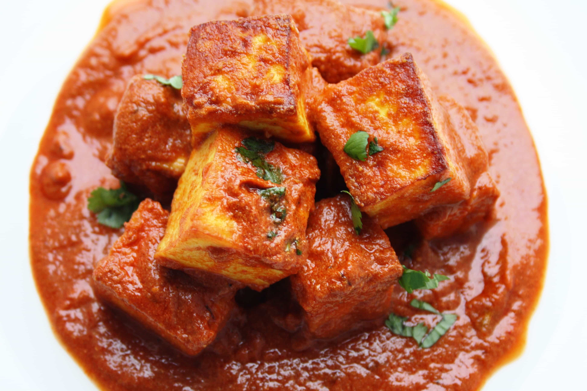
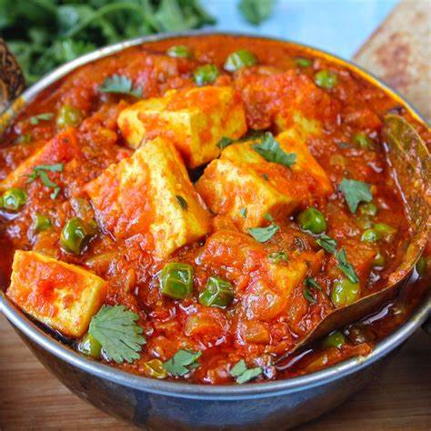
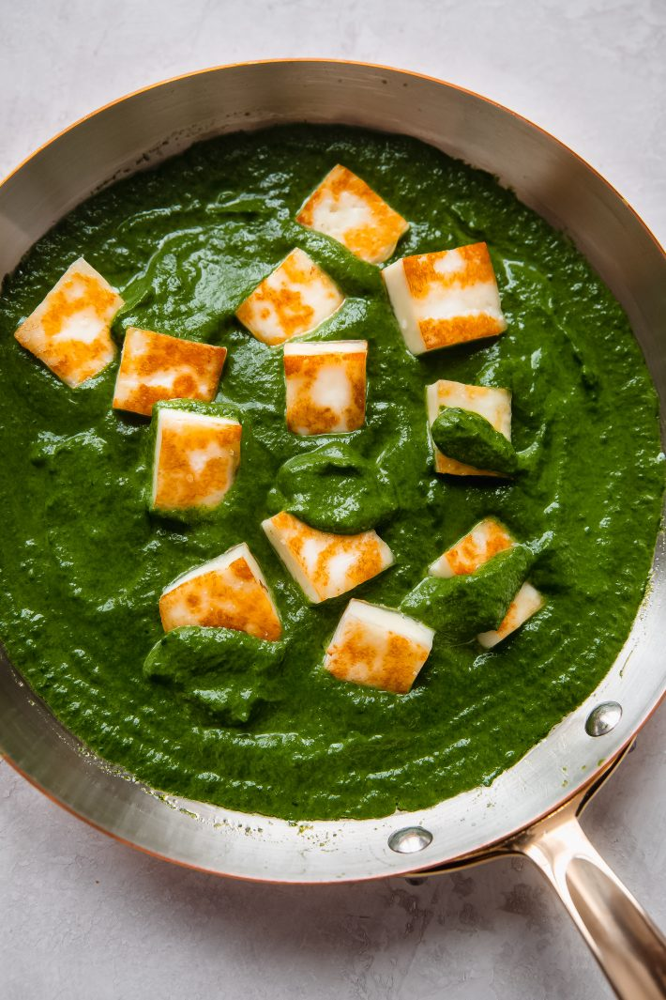
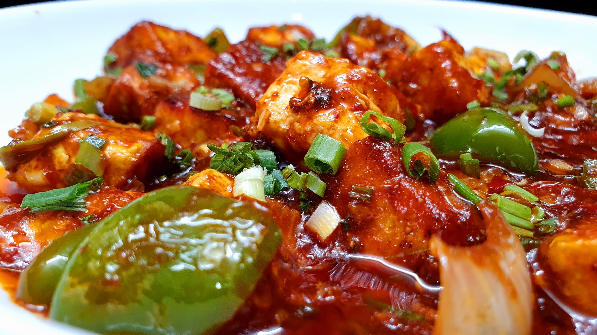

Khaoo Paneer
Nothing beings pepole together like good food.
|  | Kashmiri Paneer MasalaKashmiri Style Paneer Masala Recipe is a made with toasted paneer cubes soaked in tomato and yogurt gravy flavored with whole some spice |
|  | Matar PaneerMattar paneer, also known as matar paneer, muttar paneer, and mutter paneer is a modern restaurant style and vegetarian North Indian dish consisting of peas and paneer in a tomato based sauce, spiced with garam masala. |
|  | Best Palak PaneerPalak paneer is a vegetarian dish, consisting of paneer in a thick paste made from puréed spinach, called palak in Hindi, Marathi, Gujarati, and other Indian languages. |
|  | Schezwan Chilli PaneerCrispy chilli paneer is a Indo chinese starter or appetizer made by tossing fried paneer in sweet sour and spicy chilli sauce. |